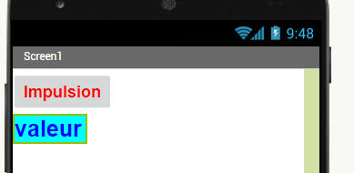
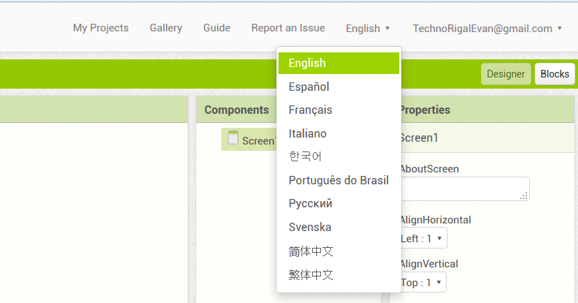
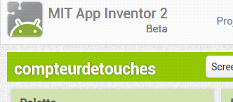
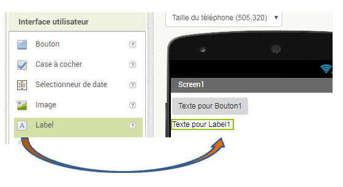
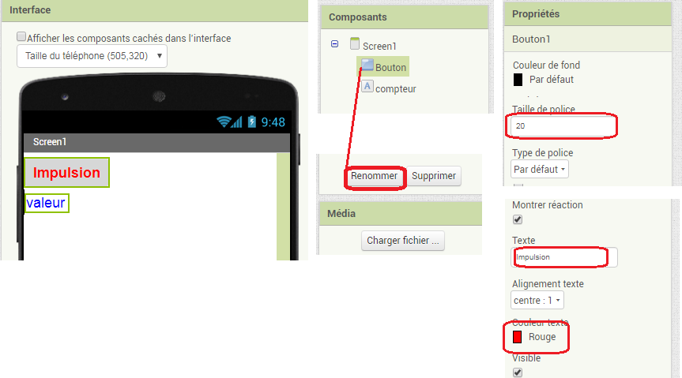
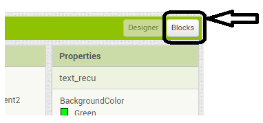
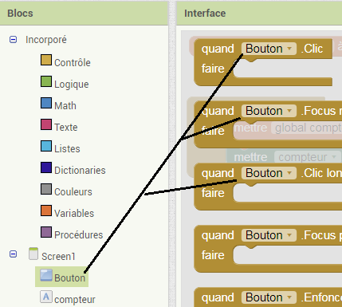
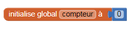
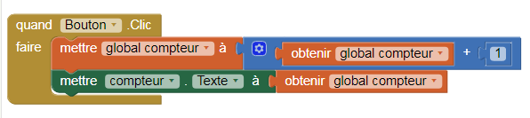
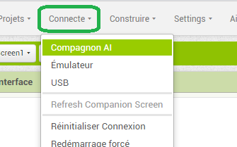

 |
Exemple 1 APP Inventor Comptage des impulsions sur le téléphone |
Ce document est un petit exemple de prise en main du logiciel destiné à vous aider dans votre apprentissage de App Inventor
Avant de commencer l'exercice, lire le chapitre "ressources app inventor" et regarder les tutoriels donnés ainsi que le document PDF suivant: document pdf d'aide plus complet
COMPTER LES IMPULSIONS SUR L'ECRAN DU TELEPHONE.
Créer une application :
Vous allez d'abord choisir la langue dans laquelle vous êtes le plus à l'aise

Dès lors si vous demandez de l'aide le passage par l'anglais s'impose !
Notre application sera très simple, elle consiste à compter le nombre de fois que l
’on clique sur un «Bouton».
Nous allons appeler notre application « compteurdetouches »

1ère étape du projet : « Dessiner l'interface »
Un « glissé/déposé » d'un bouton puis d'un label de la colonne de gauche:

« Palette », en cliquant sur chaque élément, la colonne « Composants » change et vous pouvez renommer les éléments (label) puis dans la colonne de droite « Propriétés » on peut change l'aspect des éléments: titre, police...
Changer les propriétés du bouton1:

Changer du label:
Le nommer compteur, dans "propriétés": couleur de fond cyan, taille de police 28, texte "valeur", couleur de texte bleue.
2ème étape du projet : « Décrire le comportement de l'application »
Une fois l'allure de notre application créée, il est nécessaire de décrire son comportement.
Pour cela, il faut cliquer sur « Blocks » en haut et à droite de la page

On peut voir que les blocs sont classés par famille (et couleur); on retrouve les éléments programmés précédemment (Bouton et compteur)

 |
Dans un premier temps, nous allons créer une variable «compteur » que nous allons initialiser à « 0 » (cela signifie qu'au départ, notre compteur sera bien à 0!!!) |
 |
Ensuite, à chaque « clic » sur le «Bouton », nous allons effectuer l'action suivante... On prend la valeur de « global compteur » (qui ici sera au départ à 0) et nous allons ajouter 1 à ce total.... Ensuite, nous allons prendre «Compteur » un label texte dans lequel nous allons écrire la valeur « global compteur » |
Et c'est terminé !.. il faut maintenant le transférer dans le téléphone:

En sélectionnant « Companion AI » dans le menu connecte, un QR-code et un code (usage au choix) sont délivrés pour récupérer votre interface opérationnelle sur votre smartphone ou tablette.
Il faut alors ouvrir l'application sur le téléphone, diriger la caméra du téléphone vers le le « Qr-Code » qu'affiche l'ordinateur ; le programme se télécharge alors vers le téléphone
Créé avec HelpNDoc Personal Edition: Éditeur de documentation CHM facile